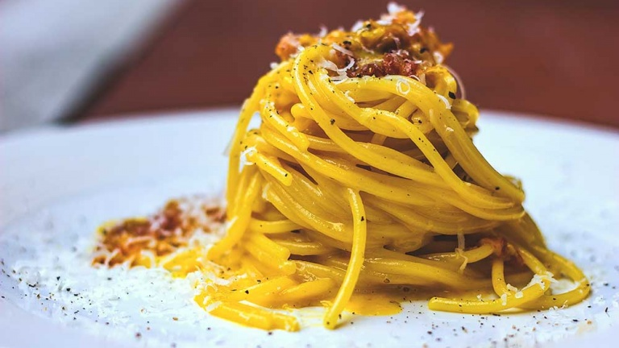

Ce Vole Er Guanciale
Ce Vole Er Guanciale is a restaurant specialized in recipes using a pork cut called Guanciale. The most famous meal of the house is the classical chef's Calogero Maria Maiera Pasta Alla Carbonara. Some say people only start living after tasting it.
"Guanciale" is a traditional italian cured meat. Pronounced gwan-chee-AH-lay, the name refers to one of the few cuts taken from the head of the pig, the jowl or cheek: "guancia" - Italian for cheek, hence, Guanciale!